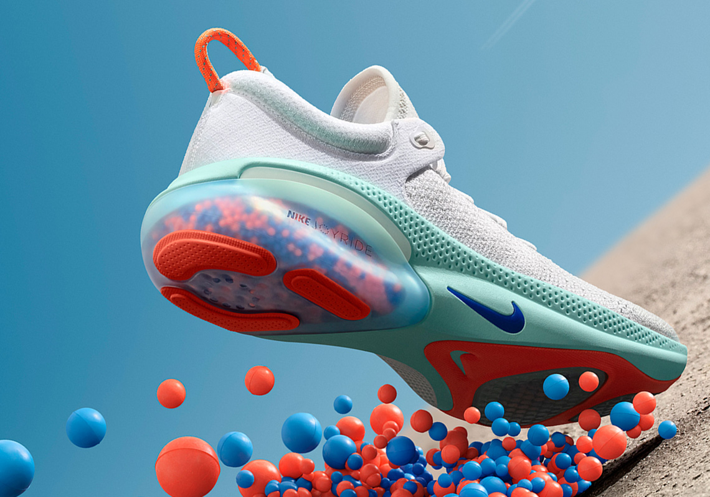

Nike Suing Over Counterfeits and NFT's

Nike is suing StockX, an online shoe reseller, for selling NFTs of images of Nike sneakers and for, allegedly selling counterfeit shoes. The lawsuit is pressure-testing the relationship between a retailer and a manufacturer and might change how we approach NFTs.
Key Points:
- In February 2022 Nike sued StockX for selling NFTs of images of Nike sneakers without the shoe giant's permission. They argued that StockX infringed its trademarks by causing consumer confusion. The lawsuit also stated that StockX's NFTs interfered with Nike's own NFT plans.
- StockX in the Manhattan federal court filing called Nike's lawsuit a "baseless and misleading" attempt to interfere with the popular secondary market for its sneakers. It said it was only using NFTs to authenticate its physical shoes and was not selling them as standalone products.
- A few days ago Nike ramped up the sneaker NFT lawsuit with a StockX counterfeiting claim. Nike’s team said last Tuesday in a proposed amended complaint that it recently bought counterfeit shoes through StockX despite the platform's claims that its NFTs are part of a process to guarantee its shoes' authenticity.
- The legal battle has the potential to shake up the relationship between a retailer and a manufacturer and is going to be tested—and it’s unprecedented territory. “I don’t think we’ve seen a case like this,” says Leah Chan Grinvald, associate dean and professor of law at Suffolk University. “I think that will make it really of interest to legal scholars if it makes it to court.”
- Manufacturers audit for counterfeiting regularly, and they buy their own products from retailers, according to Grinvald. However, it’s extremely rare for a manufacturer to sue a retailer for selling products that may have been counterfeited.
- The lawsuit might also set some legal guidelines for NFTs, which currently have minimal restrictions.
- The case is Nike Inc v. StockX LLC, U.S. District Court for the Southern District of New York, No. 1:22-cv-00983.

Sneakers on display at a StockX popup store in Hong Kong.
Read more Fashion news.